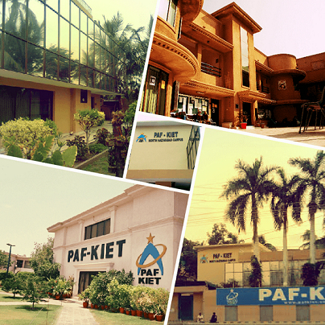
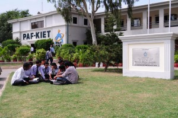

|  | Our mission is to educate the whole person, graduating students who seek purpose-filled lives.
Our academic programs are designed to prepare students to meet challenges of the fast-changing and developing world.
Purpose built building structures, open spaces and green lawns, and diversity of students creates a stimulating and lively campus environment. The PAF-KIET City Campus is situated in Block-6 P.E.C.H.S at Shahrah-e-Faisal, Karachi. The location provides opportunity to working students for acquiring higher professional education during evenings and weekends.
The PAF-KIET City Campus is situated in Block-6 P.E.C.H.S at Shahrah-e-Faisal, Karachi. The location provides opportunity to working students for acquiring higher professional education during evenings and weekends.
The location provides opportunity to working students for acquiring higher professional education during evenings and weekends. |
|  | Students of PAF-KIET have a number of opportunities to participate in extra co-curricular activities. These include dramatics, debates, seminars, conferences, exhibitions, musical functions and festivals. Such activities are organized by students’ societies under the guidance of patron faculty members and support of the administration. Students are encouraged to participate in tournaments of Cricket, Volleyball, Table Tennis, Soccer, etc.
Students of PAF-KIET have a number of opportunities to participate in extra co-curricular activities. These include dramatics, debates, seminars, conferences, exhibitions, musical functions and festivals. |
The academic year consists of Fall (September-January) and Spring (January-May) semesters each of approximately 18 weeks and a Summer (June-August) semester of 8 weeks. Full-time students take 5-6 courses in Fall and Spring semesters and upto 2 courses in the Summer semester.
Students of PAF-KIET have a number of opportunities to participate in extra co-curricular activities. These include dramatics, debates, seminars, conferences, exhibitions, musical functions and festivals. Such activities are organized by students’ societies under the guidance of patron faculty members and support of the administration. Such activities are organized by students’ societies under the guidance of patron faculty members and support of the administration. Such activities are organized by students’ societies under the guidance of patron faculty members and support of the administration. Such activities are organized by students’ societies under the guidance of patron faculty members and support of the administration. Such activities are organized by students’ societies under the guidance of patron faculty members and support of the administration. |